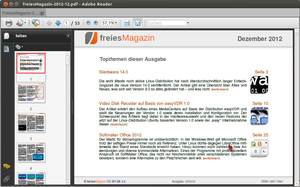

Adobe Reader
Archivierte Anleitung
Dieser Artikel wurde archiviert, da er - oder Teile daraus - nur noch unter einer älteren Ubuntu-Version nutzbar ist. Diese Anleitung wird vom Wiki-Team weder auf Richtigkeit überprüft noch anderweitig gepflegt. Zusätzlich wurde der Artikel für weitere Änderungen gesperrt.
Zum Verständnis dieses Artikels sind folgende Seiten hilfreich:
Der Adobe Reader  ist ein PDF-Betrachter des Unternehmens Adobe, das ursprünglich das Format PDF entwickelt hat und weitere Software dazu vermarktet. Der Adobe Reader ist keine freie Software, aber im Gegensatz zum kommerziellen Adobe Acrobat, mit dem sich PDF-Dateien erstellen und bearbeiten lassen, kostenlos erhältlich.
ist ein PDF-Betrachter des Unternehmens Adobe, das ursprünglich das Format PDF entwickelt hat und weitere Software dazu vermarktet. Der Adobe Reader ist keine freie Software, aber im Gegensatz zum kommerziellen Adobe Acrobat, mit dem sich PDF-Dateien erstellen und bearbeiten lassen, kostenlos erhältlich.
Achtung!
Mit Einführung der JavaScript-Funktionen und der Unterstützung von eingebettetem Flash im Adobe Reader 8.x und 9.x traten vermehrt Sicherheitslücken auf, durch die bereits beim einfachen Betrachten eines präparierten PDF-Dokuments ein System kompromittiert werden kann.
In der letzten verfügbaren Linux-Version 9.5.5 klaffen zahlreiche gemeldete und somit bekannte Sicherheitslücken, die von Adobe nicht mehr geschlossen werden, weil die Entwicklung an Version 9.x eingestellt wurde. Neuere Versionen des Adobe Readers sind nicht nativ für Linux erhältlich. (Details im Ikhayaartikel).
Von der Verwendung vom Adobe Reader 9.5.5 (oder einer älteren Version) muss deshalb für Linux dringend abgeraten werden!
Installation¶
Bis einschließlich Ubuntu 13.04 lässt sich Adobe Reader 9.5.5 aus der Paketquelle Canonical Partner installieren, die vorher freigeschaltet [2] werden muss. Nach dem Aktualisieren der Paketquellen kann die englischsprachige Version über das folgende Paket installiert [1] werden. Eine deutsche Version ist ab Adobe Reader 9.5.4 nicht mehr vorhanden.

acroread (Canonical Partner)
 mit apturl
mit apturl
Paketliste zum Kopieren:
sudo apt-get install acroread
sudo aptitude install acroread
Anschließend kann man den Adobe Reader entweder über den Programmnamen oder in einem Anwendungsmenü über "Büro → Adobe Reader" aufrufen. Beim ersten Start müssen die Lizenzbedingungen gelesen und akzeptiert werden.
PlayOnLinux¶
Die aktuelle Windows-Version des Adobe Acrobat Readers DC  , dem Nachfolger des Adobe Readers, kann mithilfe von PlayOnLinux installiert werden.
, dem Nachfolger des Adobe Readers, kann mithilfe von PlayOnLinux installiert werden.
Sicherheitsaspekte¶
Die eingangs erläuterten schweren Sicherheitsbedenken lassen sich durch einige Maßnahmen zumindest begrenzen.
JavaScript-Unterstützung deaktivieren¶
Viele PDF-Formulare erfordern eine JavaScript-Unterstützung. Dennoch muss empfohlen werden in den Einstellungen des Adobe Readers die JavaScript-Unterstützung vollständig zu deaktivieren.
Über die Blacklist in der Datei /opt/Adobe/Reader9/Reader/GlobalPrefs/reader_prefs lassen sich notfalls auch nur einzelne JavaScript-Funktionen abschalten. Das setzt allerdings voraus, dass a) bekannt ist welche Funktionen potentielle Schwachstellen darstellen und b) welche Funktionen für die Formulare eines Dokuments benötigt werden.
Flash-Unterstützung deaktivieren¶
Ein Deaktivieren der ebenfalls sehr sicherheitskritischen Flash-Unterstützung des Adobe Readers ist von den Entwicklern nicht vorgesehen.
Man kann aber die dafür zuständige Bibliothek libauthplay.so.0.0.0 manuell löschen.
Browser-Plugin deaktivieren¶
Sollte für den Adobe Reader ein Plugin in einem Web Browser installiert worden sein, muss das ebenfalls deaktiviert oder gelöscht werden. Firefox hat bspw. bereits eine eigene Implementierung eines PDF-Betrachters, die zu bevorzugen ist.
Alternativen verwenden¶
Statt sich mit diesen sicherheitsrelevanten Problemen auseinanderzusetzen, ist man besser beraten sich nach einem alternativen PDF-Betrachter umzusehen, der die notwendigen Funktionen zur Verfügung stellt. Das ist die einzige Maßnahme, die wirklich alle Sicherheitsaspekte berücksichtigt.
Problembehebung¶
Menüeinträge nicht lesbar (Globalmenu)¶
Unter Unity wird zwar das Adobe-Reader-Menü in das Globalmenu übernommen, allerdings sind die Menüeinträge nicht lesbar. Um stattdessen das Menü im Programmfenster zu nutzen muss die Datei /opt/Adobe/Reader9/bin/acroread in einem Texteditor mit Root-Rechten geöffnet und der folgende Eintrag nach den auskommentierten Zeilen (mit "#") ergänzt werden:
export UBUNTU_MENUPROXY=
Fehler beim Druckvorgang¶
Der Adobe Reader nutzt standardmäßig lpr aus dem Paket cups-bsd. Erhält man die Fehlermeldung:
Fehler beim Druckvorgang. Prüfen Sie, ob der Drucker mit dem Computer verbunden ist.
Muss das Paket nachinstalliert werden:
cups-bsd
mit apturl
Paketliste zum Kopieren:
sudo apt-get install cups-bsd
sudo aptitude install cups-bsd
Links¶
Adobe Product Security Incident Response Team
- PSIRT-BlogBlacklist JavaScript
- Blogbeitrag, 11/2010
Adobe Reader XI unter Linux
- Installation mittels Wine, Blogbeitrag (undatiert)
- Erstellt mit Inyoka
-
 2004 – 2017 ubuntuusers.de • Einige Rechte vorbehalten
2004 – 2017 ubuntuusers.de • Einige Rechte vorbehalten
Lizenz • Kontakt • Datenschutz • Impressum • Serverstatus -
Serverhousing gespendet von